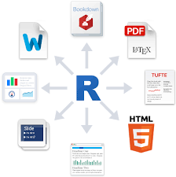
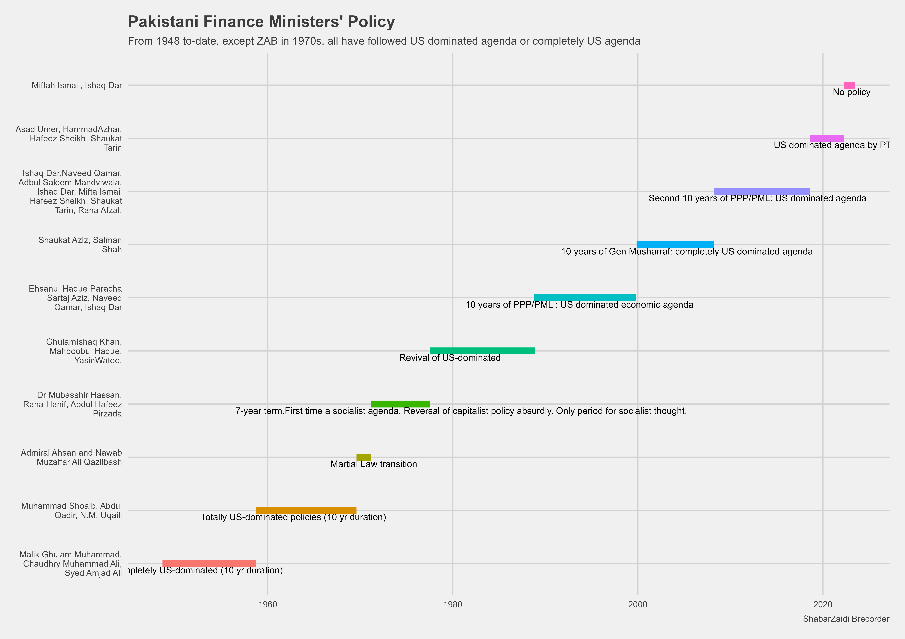

QnQ Data Analysis for HSF Fellows
03-08-2023
Mixed Methods Research
Precise research question and research design is the key. A wrong question will not have right or wrong answer.
What is mixed methods research?
Qualitative data analysis
Quantitative data analysis
How these two complement each other?
Sources
Softwares
Nvivo for qualitative data , easy to learn
MsExcel , basic daily tool
SPSS, STATA for quantitative data analysis
R : open community software, have a relatively steep learning curve but awesome and most widely used by political scientists both for qualitative and quantitative analysis
Python: open community software, very comprehensive ranging from computer scientists to engineering
R or Python are highly recommend for long term
Why my choice is R
What is mixed-methods research?
Mixed methods research
offers a process of discovery through rigorous qualitative analysis,
and then empirically investigate it through quantitative analysis.
It is often used misleadingly and
used as a jargon instead of utilising it.
How many Russian soldiers died in Ukraine-Russia war?
Russia reports around 6000
If you challenge it, how will you proceed
Interviews, FGD for some information
Once some clues of under-reporting through rigrous exploration, how will you assess the actual number?
Data shows what Moscow hides
Visit cemeteries for deaths under 50 yrs
Adjustment for covid deaths
Get data on new inheritance accounts opened
Started with interviewing, discussion, anecdotes, personal interviews and discovered underreporting by Russia, collected quantitative data and analyzed whether its really the case. This is one of the objectives of mixed-method research approach .
Qualitative Data Analysis


Text Analysis
Sentimental Analysis
Taxonomy of data
Metadata
Data formats
[.csv, .txt, .dta , .sav, .xlsx, .RData, …]{style=“color:red;”“}
Reading and saving/writing each …
parameterized reports cricket_batting data analytics reposity
Toshakhana data cleaning
tidy vs untidy data
Inspecting data frames
Size:
dim(df)- returns a vector with the number of rows as the first element, and the number of columns as the second element (the dimensions of the object)nrow(df)- returns the number of rowsncol(df)- returns the number of columns
Content:
head(df)- shows the first 6 rowstail(df)- shows the last 6 rows
Names:
names(df)- returns the column names (synonym of colnames() for data.frame objects)
Summary:
str(df)- structure of the object and information about the class, length and content of each columnsummary(df)- summary statistics for each columnglimpse(df)- returns the number of columns and rows of the tibble, the names and class of each column, and previews as many values will fit on the screen.
80% data dealing with these commands
We’re going to learn some of the most common dplyr functions:
select(): subset columnsfilter(): subset rows on conditionsmutate(): create new columns by using information from other columnsgroup_by()andsummarize(): create summary statistics on grouped dataarrange(): sort resultscount(): count discrete values
Numbers and numbers which matter are different.
Time-line data
Finance Ministers Approach
Economic Policy uncertainty

Economic Policy Uncertainty Index